Business Automation with an External AMQ Broker using Operators
In this article we will setup a new AMQ Broker using the Red Hat Integration - AMQ Broker Operator, a Kie Server instance using the Business Automation Operator, and configure that Business Automation instance to utilize the AMQ Broker for all of it’s messaging.
Moving the AMQ Broker outside of our Kie Server instance can give us several different advantages. By moving the internal message broker out of the Kie Server and into an external instance we are able to reduce the workload and memory footprint in our Kie Server containers. Additionally, with an external message broker we are able to leverage new micro-service design patterns that can interact with external services. Finally, when attempting to scale our Kie Server instance beyond a single pod, the external AMQ Broker becomes essential to providing fail-over capabilities between Kie Server pods, enabling the ability utilize auto-scaling, and allowing us to distribute asynchronous process instance tasks across multiple pods.
To learn more about how to build a BPMN Process that utilizes the AMQ Broker as part of a micro-service interacting with an external web service, take a look at the blog Orchestrate Web Services Using RHPAM and AMQ.
Install the AMQ Broker Operator
We will start by installing the AMQ Broker Operator in our project.
To begin make sure you have selected the Project you wish to install the applications in, or create a new Project.
From the Administrator page on the OpenShift Web Console select Operators > OperatorHub from the panel on the left hand side and search for AMQ Broker in the search box. Select the option for Red Hat Integration - AMQ Broker for RHEL 8 (Multiarch).
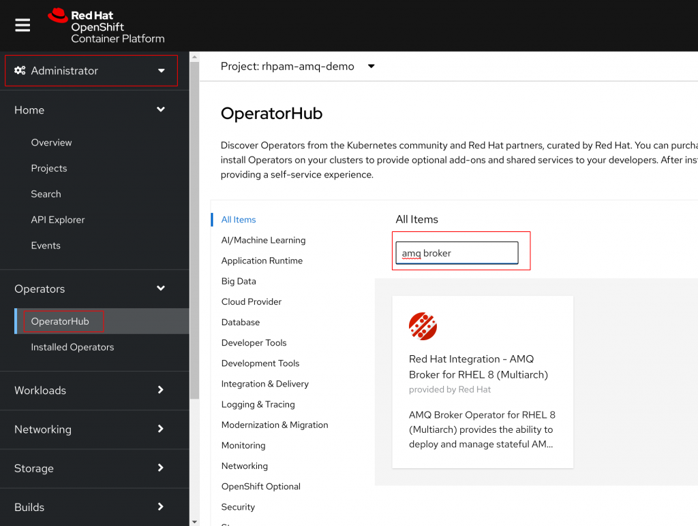
Click on the Install box to bring up the install options page. Set the Channel to 7.x and update the Install Mode to A specific namespace on the cluster. Double check that the correct namespace is selected.
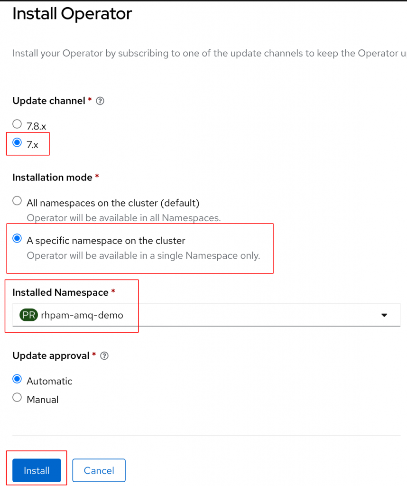
The 7.x version of the operator supports both cluster installs and namespaced installs of the operator. Cluster installs enable users to install the AMQ components in any namespace with a single version of the Operator installed in the entire cluster. Namespaced installs only allow the operator to monitor for resources created in the namespace the operator was installed. Generally, cluster installs require Cluster Admin permissions and will expose the operator to all users of the cluster.
Click Install to start the installation.
To verify the install succeeded navigate to Operators > Installed Operators from the left hand navigation panel. You should see the Red Hat Integration - AMQ Broker for RHEL 8 (Multiarch) listed with a Succeeded Status.
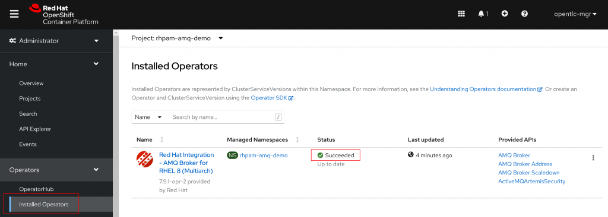
Install the Business Automation Operator
Next we will install the Business Automation Operator.
Just like before, navigate to Operators > OperatorHub and search for Business Automation in the search box. Select the Business Automation Operator and click Install.
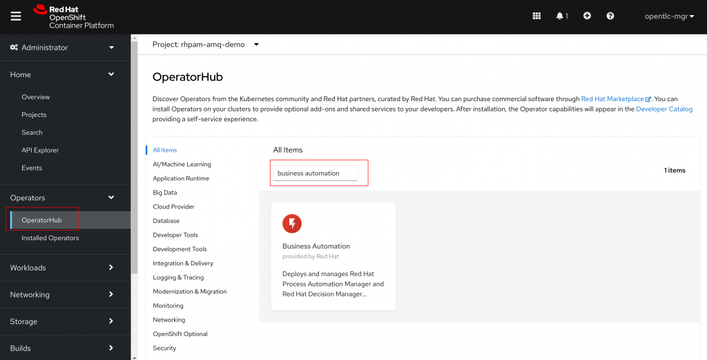
For Business Automation the Stable channel should already be selected. Double check that the correct namespace is selected and click Install.
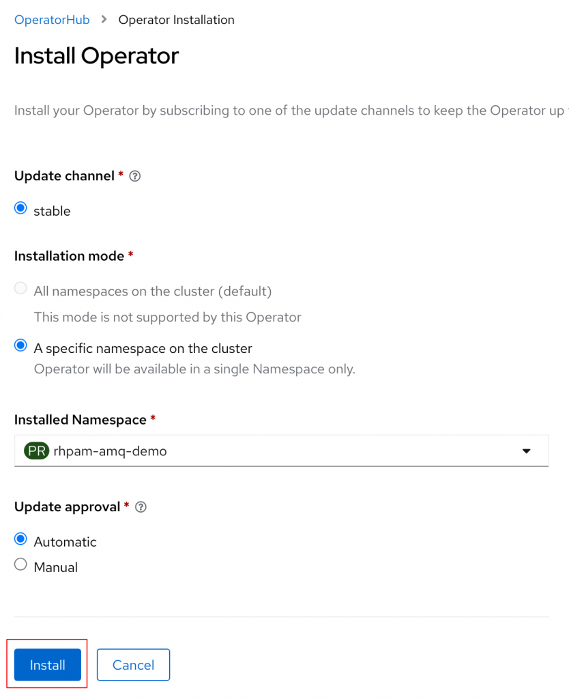
Just like before you can double check that the install succeeded under Operators > Installed Operators and waiting for the Status to report as Succeeded.
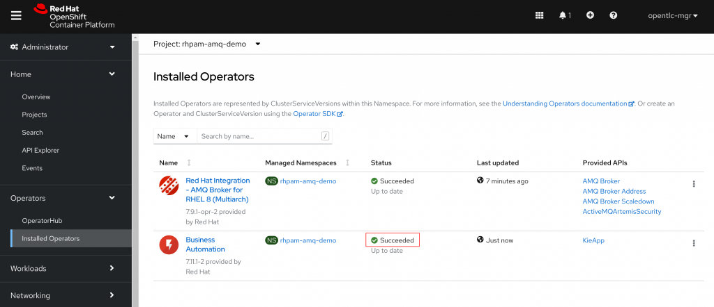
Setup the AMQ Broker
Next we will utilize the AMQ Broker Operator to setup an AMQ Broker instance and the addresses Business Automation requires.
To create an AMQ Broker instance navigate to the AMQ Broker Operator page by going to Operators > Installed Operators and selecting Red Hat Integration - AMQ Broker for RHEL 8 (Multiarch). On the AMQ Broker operator page click Create instance for the AMQ Broker object.
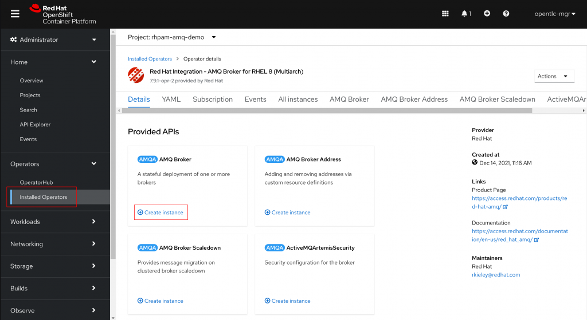
This will bring us to a page with a Form view already started for us. We can also switch to a YAML view where we can edit the YAML directly. We will start by updating the name and application fields to be amq-demo and amq-demo-app. Then we will add the a section for console.expose: true under the spec to enable a web console for the AMQ Broker.
Click Create at the bottom of the page to create the new AMQ Broker instance.
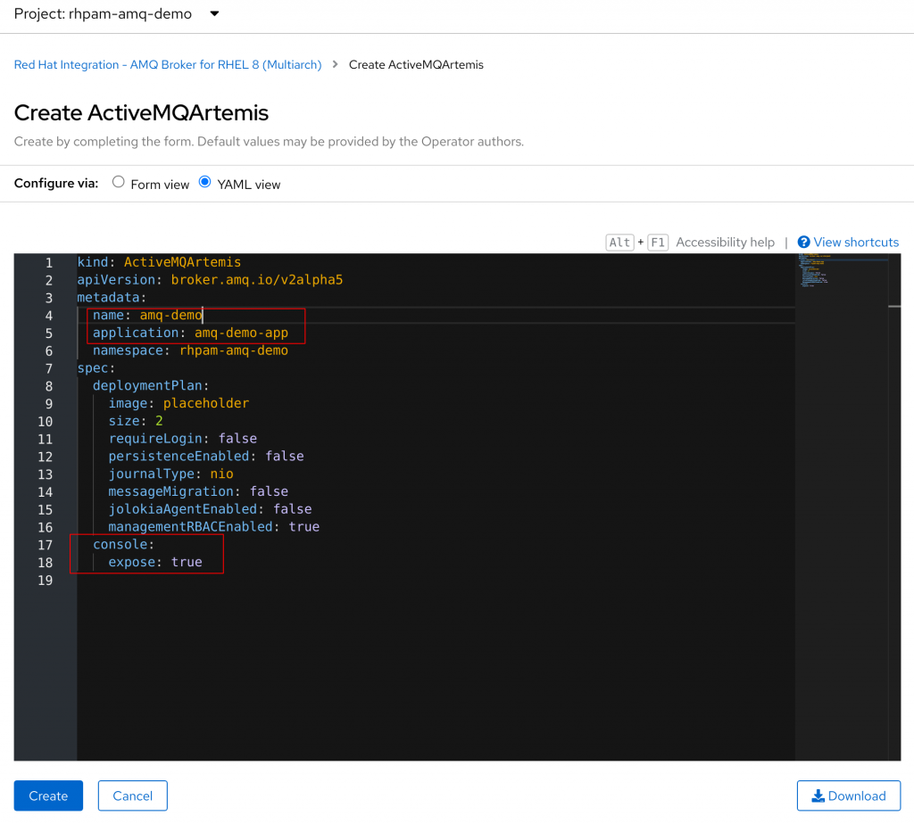
The AMQ Operator will now utilize our resource definition to create a new AMQ Broker instace. To validate the setup, navigate to Workloads > Pods on the left hand panel. You should see an instace of the AMQ Broker Operator, and the Business Automation Operator that we previously installed. A new pod called amq-demo-ss-0 should be listed. The pod may take a few minutes to successfully start. After the first pod has become ready, a second pod called amq-demo-ss-1 should start as well.
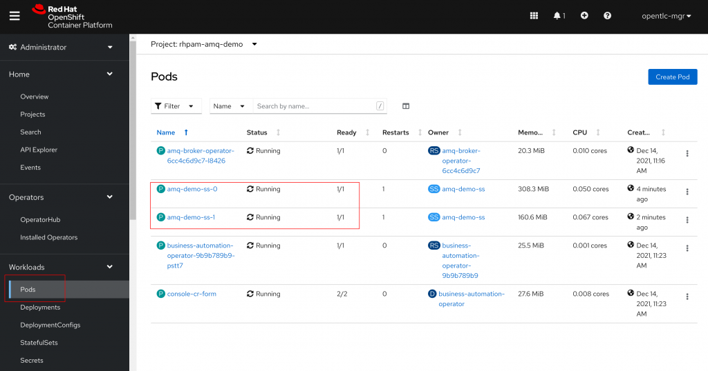
Setup the AMQ Addresses
Next we will need to create the default queues that our Kie Server application will utilize. Just like the Broker object, the AMQ Broker Operator provides us a default YAML template or a Form we can utilize to create the AMQ Broker Address objects.
Alternatively, we can create multiple objects at once using the YAML import feature. Click on the + icon in the top right hand corner to open the Import YAML page and copy and paste the following into the editor:
--- kind: ActiveMQArtemisAddress apiVersion: broker.amq.io/v2alpha3 metadata: name: demo-audit namespace: rhpam-amq-demo spec: addressName: DEMO_AUDIT queueName: DEMO_AUDIT routingType: anycast --- kind: ActiveMQArtemisAddress apiVersion: broker.amq.io/v2alpha3 metadata: name: demo-executor namespace: rhpam-amq-demo spec: addressName: DEMO_EXECUTOR queueName: DEMO_EXECUTOR routingType: anycast --- kind: ActiveMQArtemisAddress apiVersion: broker.amq.io/v2alpha3 metadata: name: demo-request namespace: rhpam-amq-demo spec: addressName: DEMO_REQUEST queueName: DEMO_REQUEST routingType: anycast --- kind: ActiveMQArtemisAddress apiVersion: broker.amq.io/v2alpha3 metadata: name: demo-response namespace: rhpam-amq-demo spec: addressName: DEMO_RESPONSE queueName: DEMO_RESPONSE routingType: anycast --- kind: ActiveMQArtemisAddress apiVersion: broker.amq.io/v2alpha3 metadata: name: demo-signal namespace: rhpam-amq-demo spec: addressName: DEMO_SIGNAL queueName: DEMO_SIGNAL routingType: anycast
Click Create to create all of the Address objects.
To validate the creation, return to the Operators > Installed Operators page and select the AMQ Broker Operator. Navigate to the AMQ Broker Address tab and you should see all of the AMQ Broker Address objects we have created.
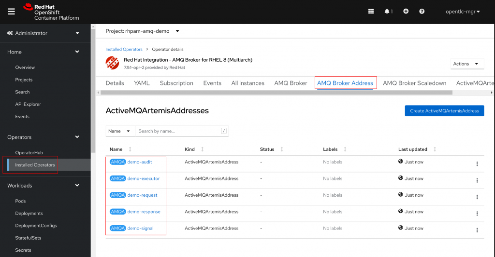
Next, we will validate that the new addresses have been created inside of the AMQ Broker. Navigate to Networking > Routes in the admin panel. You should see two routes for the AMQ Broker titled something like amq-demo-<random-id>-0-svc-rte and amq-demo-<random-id>-1-svc-rte. Click on the URL associated with either one. In the new window click on the link for Management Console. An OpenShift OAuth login page will appear. Use the same username and password you use to login to OpenShift.
On the console you should see the addresses we created under amq-broker > addresses.
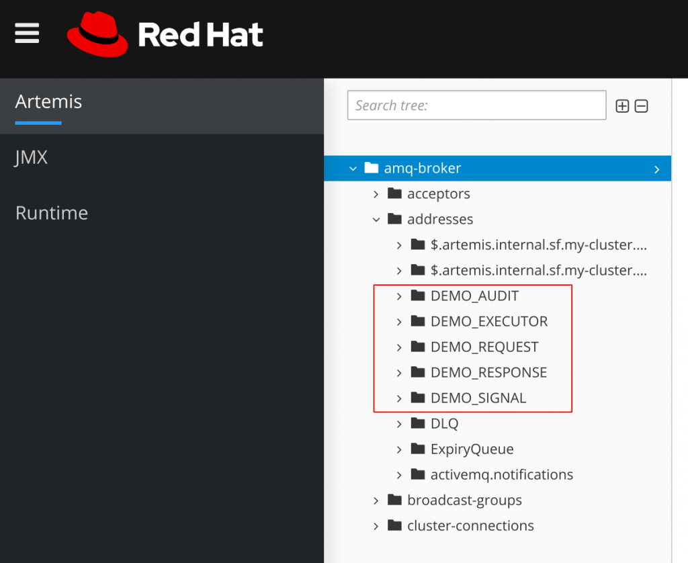
Setup the Kie Server
Navigate to Operators > Installed Operators and select the Business Automation Operator. Select the option Create instance for the KieApp.
A new YAML template will appear. Select the radial button to change the view to the Form view. By default the Name field is filled out as well as the Environment. Update the Name to rhpam-demo and select rhpam-trial for the Environment.
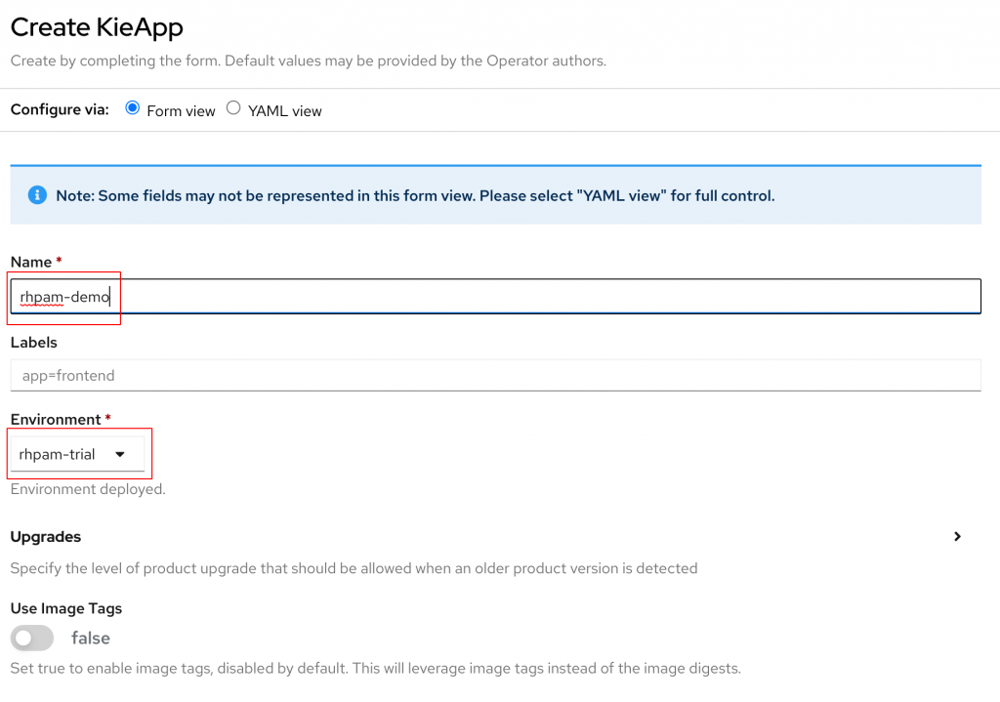
For more information on the various environment options, review the official documentation for deploying PAM utilizing the operator.
In the form, open the Objects > Servers section and choose the option to Add Server. Locate the Env option in the newly created Server object and click Add Env.
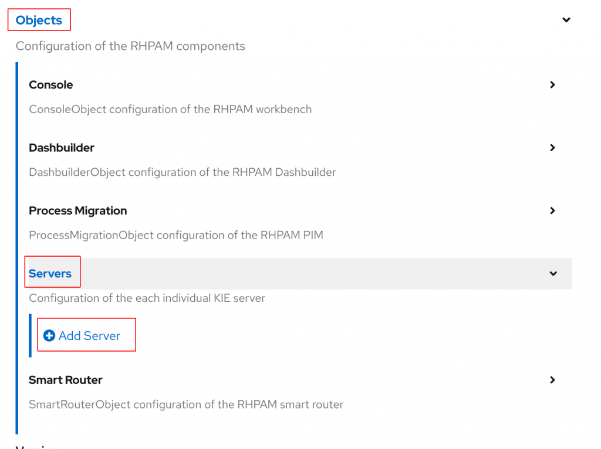
Create a new environment variable with the following name and value:
name: MQ_SERVICE_PREFIX_MAPPING
value: DEMO_amq7=AMQNext, click the option to add another Env and create a new variable names AMQ_USERNAME. Leave Value empty and instead click the options for Value From > Secret Key Ref. In the Key field enter AMQ_USER for the name enter amq-demo-credentials-secret.
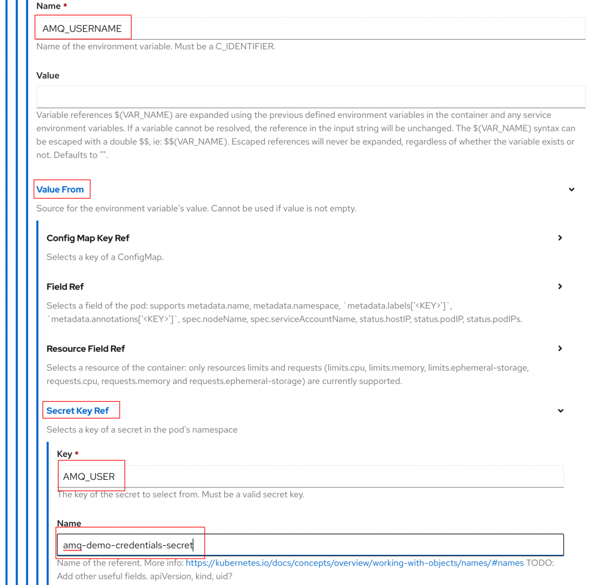
The amq-demo-credentials-secret is an object created by the AMQ Broker Operator when it created our AMQ Broker instance. AMQ_USER is the name of secret we would like to reference inside of amq-dem-credentials-secret. To view the contents of the amq-demo-credentials-secret you can find it under Workloads > Secrets in the left hand panel.
Add another env variable using the Secret Key Ref named AMQ_PASSWORD. For the Key field enter AMQ_PASSWORD and the same secret as before, amq-demo-credentials-secret, for the name.
The next env variable with will create should be called DEMO_AMQ_TCP_SERVICE_HOST and set the value equal to amq-demo-hdls-svc.
This address is a Kubernetes Service object created by the AMQ Broker Operator for our AMQ Broker instance to assist with internal networking between pod. To validate the name of your service, you can view it under Networking > Services in the left hand panel.
Continue this process to create all of the following environment variables:
- name: DEMO_AMQ_TCP_SERVICE_PORT
value: '61616'
- name: AMQ_PROTOCOL
value: tcp
- name: KIE_SERVER_JMS_QUEUE_EXECUTOR
value: DEMO_EXECUTOR
- name: KIE_SERVER_JMS_QUEUE_RESPONSE
value: DEMO_RESPONSE
- name: KIE_SERVER_JMS_QUEUE_REQUEST
value: DEMO_REQUEST
- name: KIE_SERVER_JMS_QUEUE_SIGNAL
value: DEMO_SIGNAL
- name: KIE_SERVER_JMS_QUEUE_AUDIT
value: DEMO_AUDIT
- name: AMQ_QUEUES
value: DEMO_EXECUTOR, DEMO_RESPONSE, DEMO_REQUEST, DEMO_SIGNAL, DEMO_AUDIT
- name: EJB_RESOURCE_ADAPTER_NAME
value: activemq-ra-remoteOnce you have finished creating all of the variables you should be able to switch back to the YAML view at the top to review your final configuration. It should look the same as you see below:
apiVersion: app.kiegroup.org/v2
kind: KieApp
metadata:
name: rhpam-demo
spec:
objects:
servers:
- env:
- name: MQ_SERVICE_PREFIX_MAPPING
value: DEMO_amq7=AMQ
- name: AMQ_USERNAME
valueFrom:
secretKeyRef:
name: amq-demo-credentials-secret
key: AMQ_USER
- name: AMQ_PASSWORD
valueFrom:
secretKeyRef:
name: amq-demo-credentials-secret
key: AMQ_PASSWORD
- name: AMQ_PROTOCOL
value: tcp
- name: DEMO_AMQ_TCP_SERVICE_HOST
value: amq-demo-hdls-svc
- name: DEMO_AMQ_TCP_SERVICE_PORT
value: '61616'
- name: KIE_SERVER_JMS_QUEUE_EXECUTOR
value: DEMO_EXECUTOR
- name: KIE_SERVER_JMS_QUEUE_RESPONSE
value: DEMO_RESPONSE
- name: KIE_SERVER_JMS_QUEUE_REQUEST
value: DEMO_REQUEST
- name: KIE_SERVER_JMS_QUEUE_SIGNAL
value: DEMO_SIGNAL
- name: KIE_SERVER_JMS_QUEUE_AUDIT
value: DEMO_AUDIT
- name: AMQ_QUEUES
value: >-
DEMO_EXECUTOR, DEMO_RESPONSE, DEMO_REQUEST, DEMO_SIGNAL,
DEMO_AUDIT
- name: EJB_RESOURCE_ADAPTER_NAME
value: activemq-ra-remote
environment: rhpam-trial
Click Create to create the new KieApp.
The Business Automation Operator will deploy several new resources based on the KieApp definition. To view all of the resources the operator creates, you can select the KieApp instance from the KieApp tab of the Business Automation Installed Operators page. Then click on the Resources tab to view all of the resources deployed by the KieApp.
You can also monitor the deployment of the KieApp pods by navigating to Workloads > Pods to view the deployed pods.
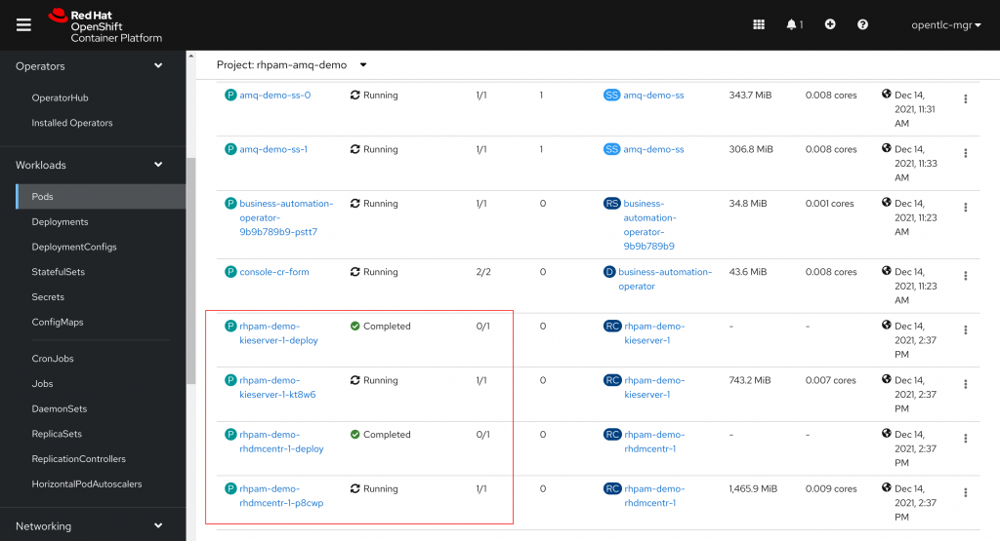
To access the new Business Central instance, navigate to Networking > Routes and click on the URL for the rhpam-demo-rhdmcentr route. The default username should be adminUser and the default password is RedHat.
To validate that our new RHPAM instance is utilizing our AMQ cluster, jump back over into the AMQ Broker console and click on the Consumers tab. You should now see our addresses listed under Consumers. The IP address under Remote Address should match the IP address for our Kie Server pod.
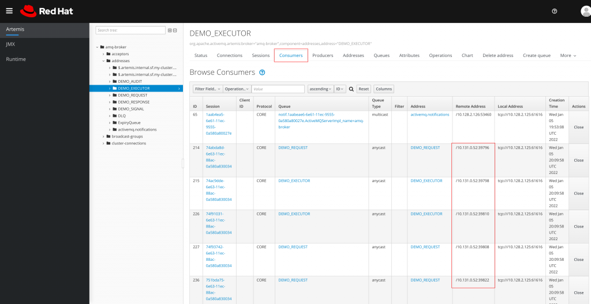
Getting with GitOps
Another advantage we haven’t discussed of relying on Operators in OpenShift to deploy the components of our application is that we will be GitOps ready!
For those of you new to GitOps, GitOps is a DevOps approach to storing all of the components of your application in a declarative format (like the YAML files created by OpenShift/Kubernetes) as part of a git repo. Then you utilize a tool such as OpenShift GitOps (ArgoCD) to continuously deploy those implementations to your cluster. Any changes to those resources in your git repo are automatically synced by the GitOps tool to your cluster. By utilizing operators to deploy our AMQ Broker and Business Automation components we can simply take the Custom Resources we create as part of our implementation, and move those resources into a git repo as part of our implementation.
GitOps is a powerful strategy when implementing solutions, especially when working in higher level environments such as a Production deployment. Instead of creating a complex procedure for deploying an application, we can simply capture the YAML objects we create for the deployment in a git repo and use that as our basis for deploying in any future environment. This helps to save time, ensure consistency across environments, and avoid configuration drift between environments.
For the items deployed in this post we would need to capture YAML objects for the following:
- AMQ Broker Operator Subscription
- Business Automation Operator Subscription
- AMQ Broker Instance
- AMQ Broker Addresses
- KieApp Instance
Conclusion
Now that our AMQ Broker and Business Automation implementations are up and running, we are ready to start developing a process and external service that communicate using our AMQ Broker. Be sure to head over to Orchestrate Web Services Using RHPAM and AMQ to learn more on developing those services.